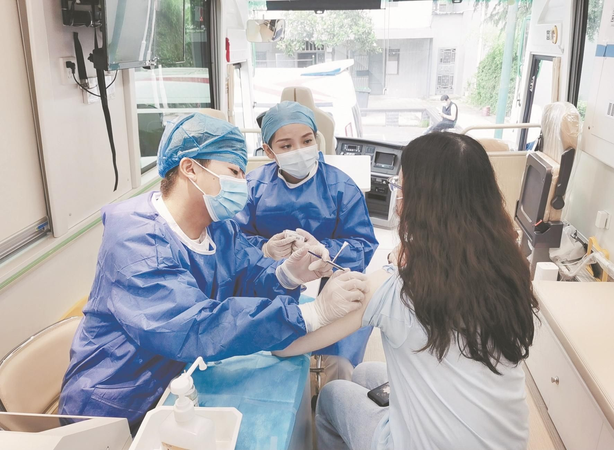
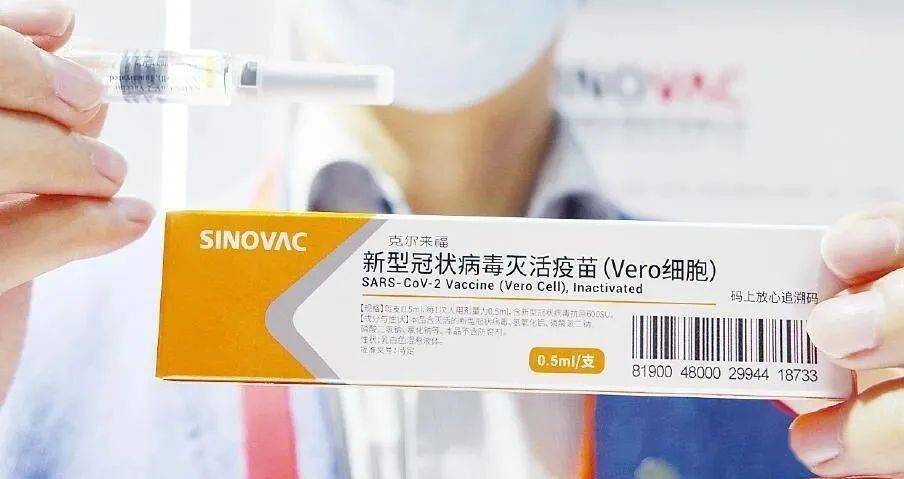
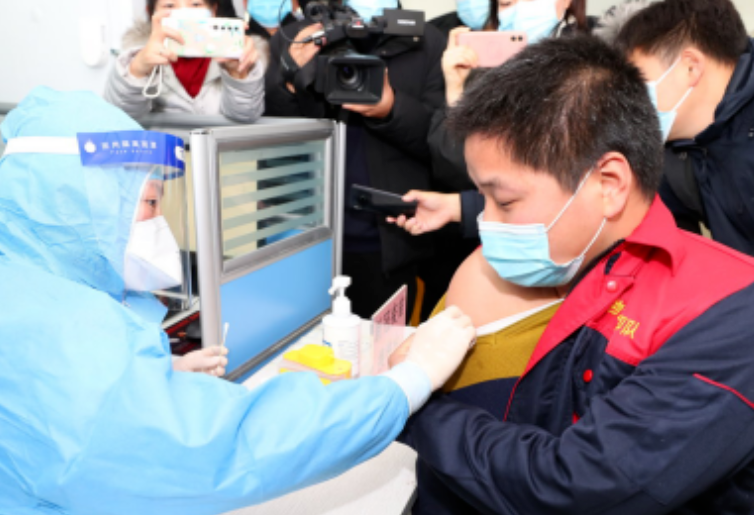

昨日，极目新闻记者从武汉市卫健委获悉，截至2021年6月9日24时，武汉市新冠病毒疫苗累计接种超1300万剂次，其中完成第一剂次接种人数超800万，完成第二剂次接种人数超500万，武汉市正在加快迈向构建群体免疫屏障的步伐。
为方便不同年龄层市民接种新冠病毒疫苗，本地医疗机构也不断在服务上提档升级，“定点+移动”点面结合，让更多市民能安全、顺利地完成接种。
据介绍，今年3月初，武汉大学中南医院就引进了移动疫苗接种车。记者在车上看到，车内设有接种工作台、储存新冠疫苗的智能冰箱。冰箱与疾控中心的冷链监控网络联网，确保疫苗储存温度在2至8摄氏度的标准范围内。车内还配备了空气净化、紫外线消毒设备，避免人群在接种车内交叉感染。
  